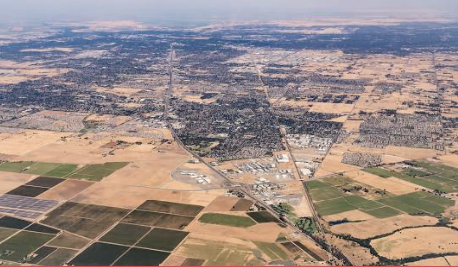

Muhammad A
HS Endorsement: Stem
CTE Pathway: Programming & Software Developement

I was born in the state of California and
lived in the city of
Elk Grove until I was
around 10 years old, then I moved to
Texas,
and as of now, I still live in the city of Houston.
I strive to become greater at computer science
as a subject and
succeed, because the subject
as a whole sparks my desire to create.
As for my
future, I want to pursue becoming a video-game developer.
| |